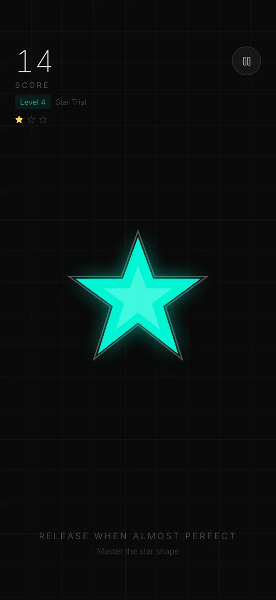
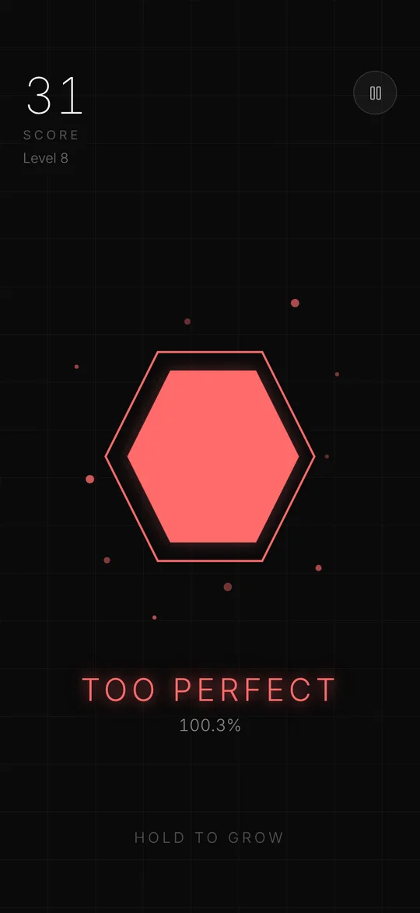
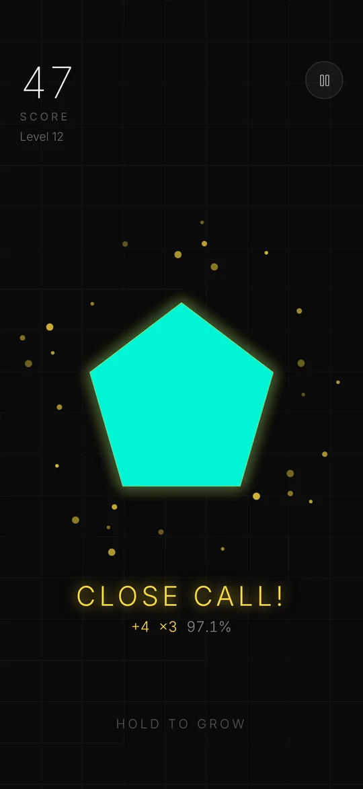
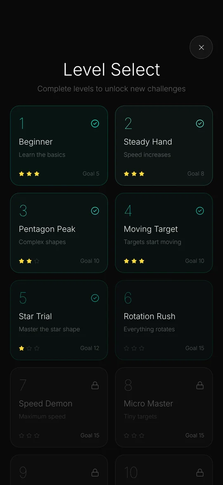

التقريب يفوز.
المثالية تخسر.
اضغط مع الاستمرار لتكبير الشكل، ثم أفلته قبل أن يملأ الإطار بقليل. أفلت بين 85% و98% لتحصل على النقاط. وإذا أصبته بالضبط تنتهي الجولة. جرّب العرض.
مجانية. تعمل دون إنترنت. بالعربية والإنجليزية والإسبانية والصينية.
قاعدة بسيطة. هامش ضيّق.
تُقاس كل إفلاتة بدقة عُشر بالمئة في اللحظة نفسها التي يرتفع فيها إصبعك.




مصمّمة لجولة أخرى… ثم أخرى
تقريباً، وليس بالضبط أبداً
أفلت بين 85% و98% لتحصل على النقاط. بين 95% و98% «على الحافة» بنقاط أكثر. وبين 98% و102% «مثالي جداً» وتنتهي الجولة.
كومبو على الحافة
كل إفلاتة على الحافة بعد أخرى ترفع الكومبو، حتى خمس نقاط في المرة.
خمسة أوضاع للعب
لا نهائي، وسباق زمني، والتحدي، ويومي، و10 مستويات مصمّمة يدوياً لكل منها ثلاث نجوم.
Game Center
لوحات صدارة للوضع اللانهائي والسباق الزمني والتحدي، و14 إنجازاً لتفتحها.
العربية وEnglish
وأيضاً بالإسبانية والصينية، مع واجهة صحيحة من اليمين إلى اليسار بالعربية.
إزالة الإعلانات مرة واحدة
لا إعلانات في أول ثلاث جولات ولا أثناء اللعب أبداً. عملية شراء واحدة تزيلها كلها.